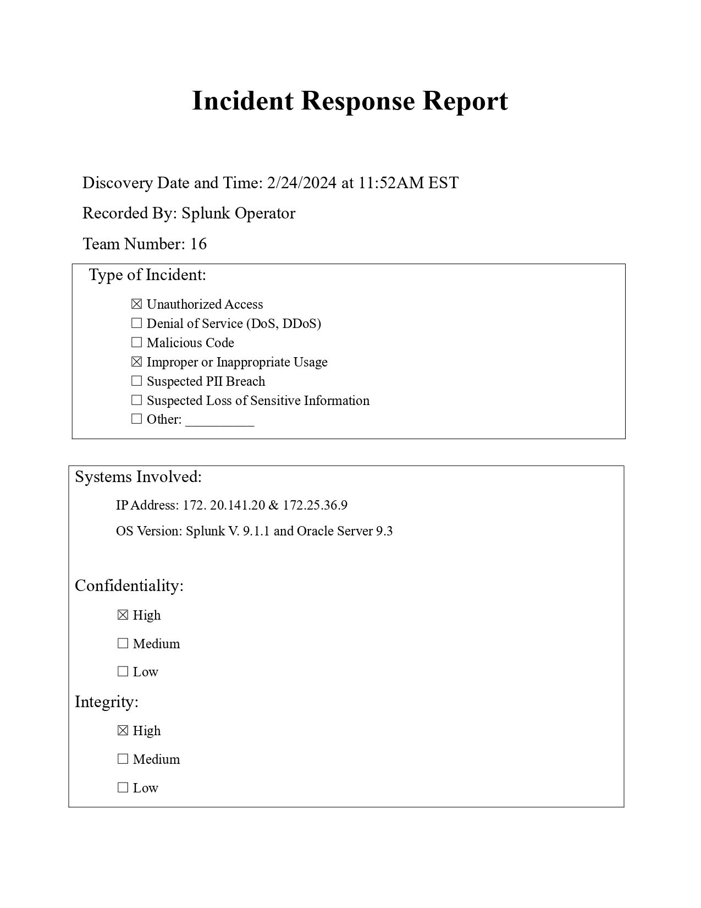
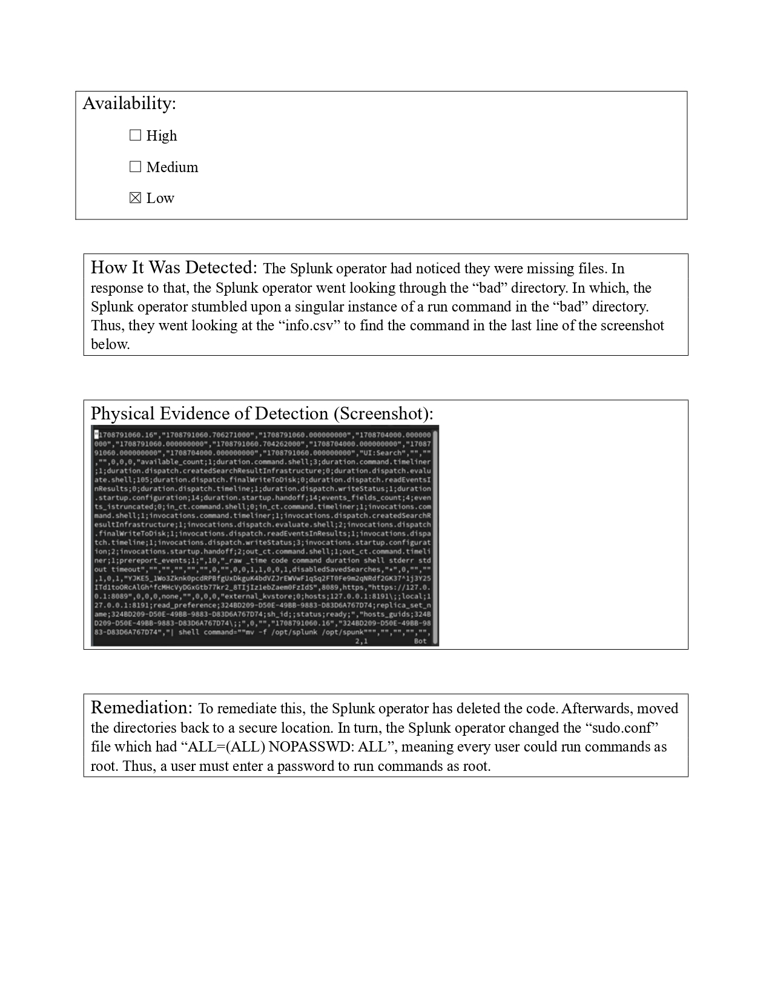
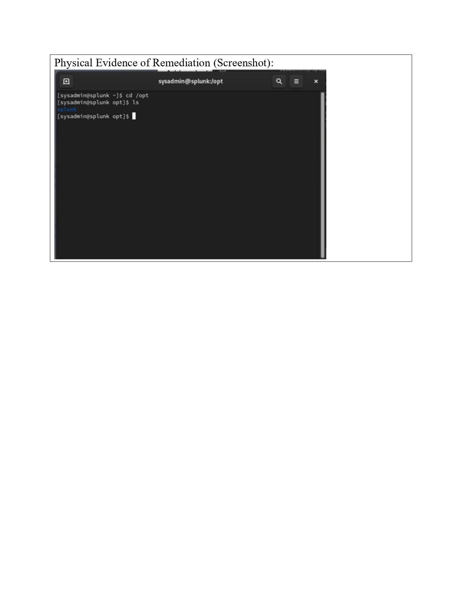
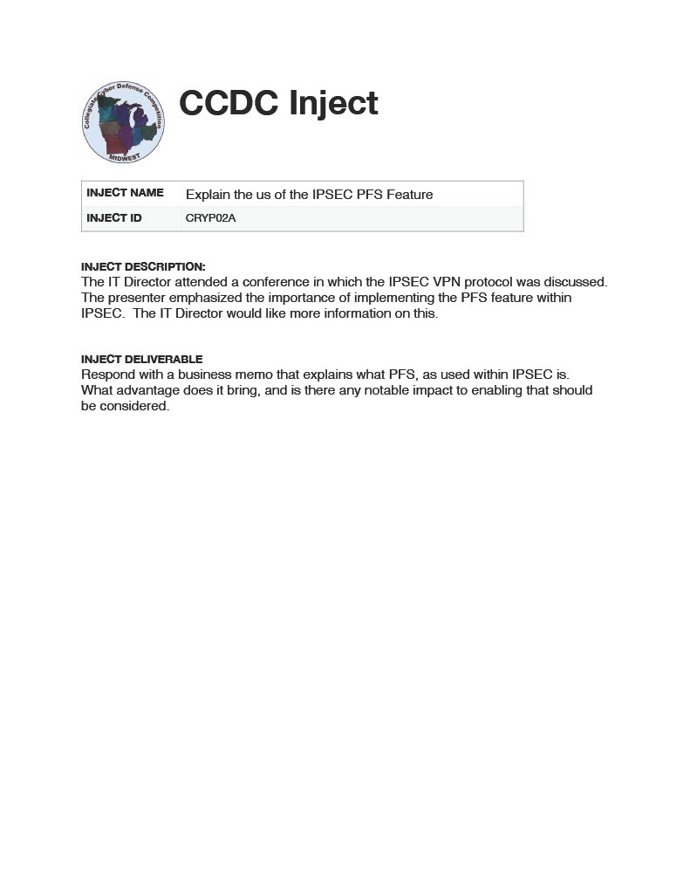
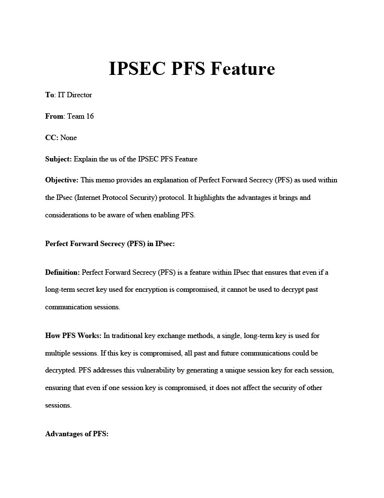
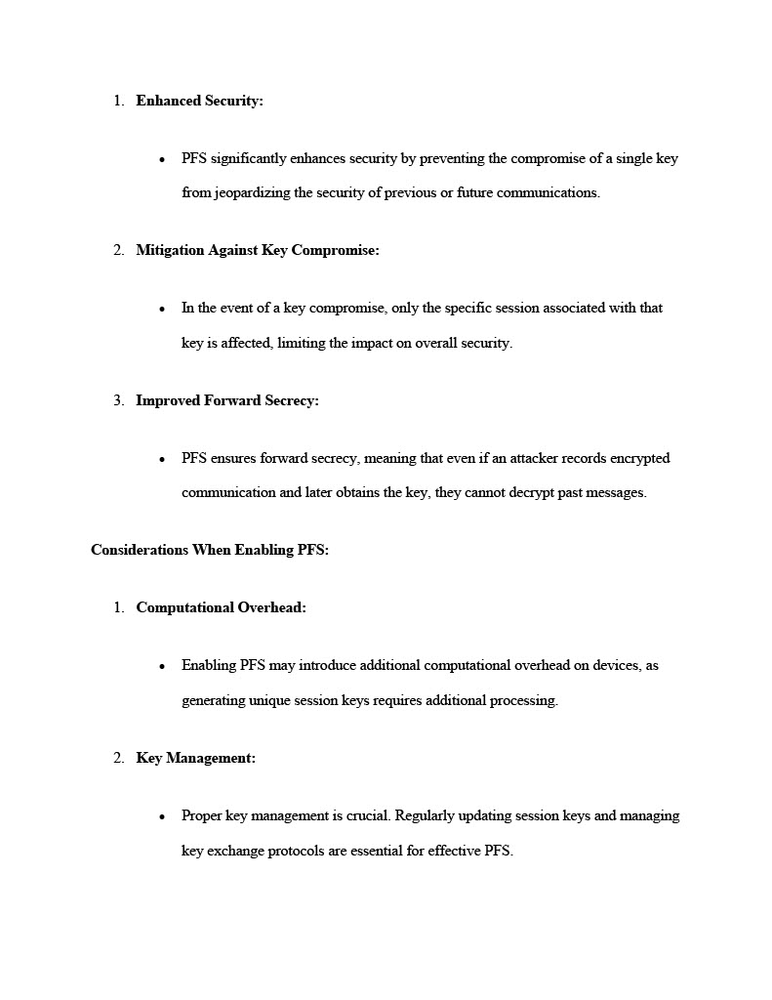
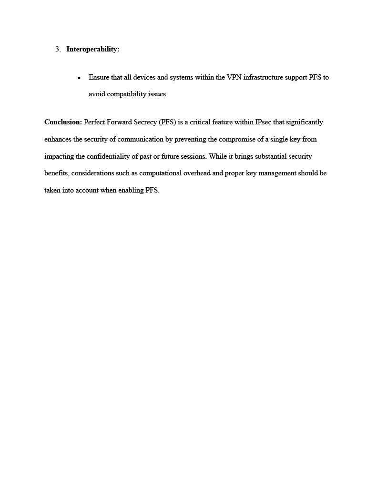

About the Collegiate Cyber Defense Competition (CCDC)
The Collegiate Cyber Defense Competition (CCDC) is a nationwide event where college students compete to defend a simulated network from cyberattacks. Teams are challenged to secure systems, respond to incidents, and work under pressure to maintain business continuity.
Benefits of CCDC:
- Hands-on Experience: Practice real-world cybersecurity skills in a competitive environment.
- Team Collaboration: Work with peers to develop strategies and solve complex problems.
- Incident Response: Gain experience in managing cyber incidents and threats.
- Networking: Interact with industry professionals and gain feedback on strategies.
For more information, visit the National CCDC website.
Skills Learned
Being part of the CCDC team has allowed me to develop both technical and soft skills that are essential in the cybersecurity field:
- Technical Proficiency: Advanced use of tools like Wireshark, Nmap, and Linux systems for identifying vulnerabilities and securing networks.
- Incident Response: Hands-on experience in detecting, analyzing, and mitigating cyber threats during live simulations.
- Team Collaboration: Working with peers to develop strategies, troubleshoot issues, and maintain system integrity.
- Time Management: Managing competing priorities under tight deadlines during high-pressure scenarios.
Incident Response Template
The Incident Response Template I developed during my time with the CCDC team follows a structured approach to handling security incidents. It provides clear documentation for identifying, analyzing, and responding to various cybersecurity threats. The template includes essential information such as the incident type, systems involved, impact assessment, and remediation steps. Below is an example of an incident response scenario:
Incident Detection
The detection process involves identifying unusual or unauthorized activities, such as system access attempts or suspicious file changes. The template includes sections for noting how the incident was detected, including any physical evidence such as logs or screenshots that confirm the occurrence of the incident.
Incident Analysis
Once detected, the incident is analyzed to determine its severity and potential impact on confidentiality, integrity, and availability. This section also includes information about the affected systems and any relevant network activity.
Remediation Actions
After analysis, appropriate remediation steps are taken to mitigate the impact of the incident. These steps may include removing malicious code, securing affected systems, and restoring integrity to the network. The template includes sections for documenting the actions taken to resolve the incident and prevent future occurrences.
Physical Evidence
Each step of the incident response process is documented with physical evidence, such as screenshots or logs, to support the analysis and remediation efforts. Below is an example of a screenshot showing the incident detection process:



My Role as Team Captain
As the team captain, I am responsible for a variety of critical tasks, including:
- Writing Injects: Crafting responses to business challenges that align with cybersecurity goals and organizational priorities.
- Speaking with Judges: Presenting our team's solutions, defending decisions, and communicating our strategies effectively to judges.
- Task Delegation: Assigning roles and responsibilities to team members based on their strengths and the competition's requirements.
- Leadership: Keeping the team focused, motivated, and organized throughout the competition.
CCDC Inject Response
During the Collegiate Cyber Defense Competition (CCDC), teams are presented with various injects that simulate real-world cybersecurity challenges. These injects require teams to respond in a timely and effective manner, demonstrating technical and strategic problem-solving skills. Each inject typically represents a scenario that could occur in an organization's IT environment, and our team’s goal is to address the issue while maintaining system security and business operations. Below is an overview of the types of injects we commonly encounter:
Incident Identification
Injects often begin with an unexpected event or anomaly, such as a security breach, unauthorized access, or an alert from a monitoring system. The inject typically asks us to identify the source and potential impact of the incident, with instructions to investigate logs, systems, or network activity.
Security Breaches
Injects related to security breaches usually involve incidents like unauthorized access attempts, malware infections, or data breaches. Our response involves identifying the point of entry, mitigating the attack, and ensuring that no sensitive data has been compromised.
Business Continuity Challenges
Some injects challenge our ability to balance security needs with business continuity. We are often tasked with implementing solutions that address the incident while ensuring that the organization's critical services remain operational and unaffected. This may include system restoration, backup verification, and managing access to essential resources.
Remediation and Prevention
After addressing the immediate threats, injects often require us to take long-term remediation actions, such as securing vulnerable systems, updating configurations, or implementing new security policies to prevent similar incidents in the future.
Physical Evidence
Each inject response is documented with physical evidence, such as screenshots, logs, or system output, which is used to verify our actions and provide proof of our decisions during the competition. Below is an example of a screenshot showing one of the inject scenarios:




Real-World Preparation
The CCDC experience mirrors real-world scenarios in cybersecurity, helping prepare me for my future career:
- Simulated Environments: The competition simulates live network attacks, providing hands-on experience in a controlled environment.
- Business Context: Balancing technical solutions with business objectives to address injects and meet organizational goals.
- Crisis Management: Learning to stay calm under pressure and prioritize actions during high-stress situations.
- Professional Interaction: Engaging with industry professionals and gaining valuable feedback to refine strategies and skills.